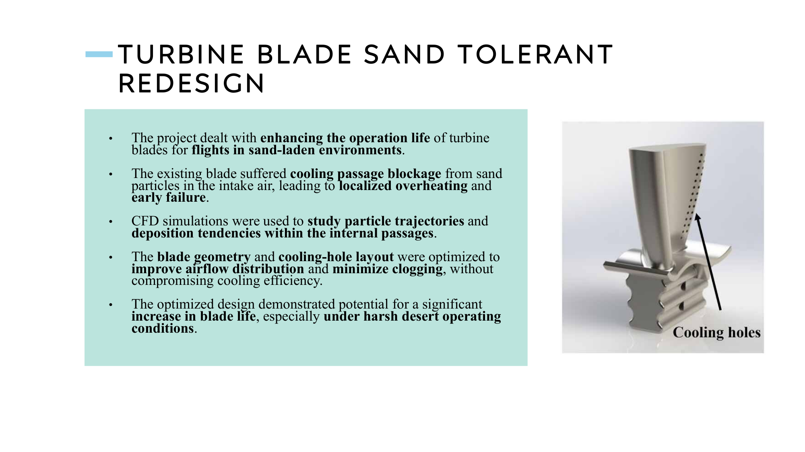

Case study · CHT & particle-laden flow · Honeywell
Cooling-passage CHT & sand-resilient redesign.
Conjugate heat-transfer root-cause investigation of cooling-passage anomalies in turbine blades operating in sand-laden environments, and a redesigned passage layout verified against thermal and fatigue margins.
Note: all Honeywell work is covered by an IP agreement. This page describes the physics, methodology, and skillset only — no proprietary geometry or performance data is shared.
Problem
Turbine blades operating in sand-laden atmospheres — typical of desert theatres — suffered progressive cooling-passage blockage from ingested fine particulates. Blocked passages reduced internal cooling effectiveness, drove local metal temperatures into the creep regime, and caused premature blade retirement. The fleet needed both a diagnostic story (why were specific passages failing preferentially?) and a design response (a passage geometry less prone to capture particles without sacrificing cooling).
Approach
- Conjugate heat-transfer (CHT) modelling — coupled fluid & solid domains so the internal cooling flow and the blade metal temperature field converged together. This is what let us localise the hot spots rather than guess from a bulk-temperature view.
- Particle-trajectory simulation — Lagrangian particle tracking through the internal passages to study where sand deposition was most likely under representative inlet conditions. Sand size distribution and impact angle were swept.
- Deposition-sensitivity mapping — produced a particle-capture map over the internal geometry and correlated it with the CHT-derived thermal hotspots. The overlap is what defined the failure mode.
- Geometry redesign — iterated cooling-hole layout and internal passage topology to redirect flow away from deposition-prone geometry while preserving cooling effectiveness. Each candidate was run through the same CHT + particle pipeline.
- Structural verification — stress and fatigue margin check in ANSYS Mechanical at representative rotational speeds and thermal loads, to make sure the aero-thermal redesign did not cost us mechanical life.

Tools & setup
- ANSYS CFX — CHT simulations with conjugate fluid–solid coupling, steady-state.
- ANSYS Fluent DPM — discrete-phase Lagrangian tracking for sand particle trajectories.
- ANSYS Mechanical — thermal-stress mapping and fatigue margin calculations at representative rotational speeds.
- SolidWorks — parametric CAD for the passage-redesign candidates.
- Python — batch runs of particle-trajectory sweeps and automated extraction of capture-fraction metrics.
Outcomes
- Repair thresholds — established data-backed blockage thresholds above which a blade needed pull-and-repair rather than continued service, feeding directly into Honeywell maintenance criteria.
- Redesigned passage geometry — the final candidate reduced predicted particle capture in the critical zone while holding cooling effectiveness within the required envelope.
- Verified mechanical margins — structural stress and fatigue life checks confirmed the redesign did not erode mechanical life, so the aero-thermal gain was not a zero-sum trade.
The defining insight: the failure mode was co-located. Passages failed where the particle-capture map and the CHT hotspot map overlapped — not simply where each was worst independently. The redesign was aimed at that overlap, and that is why it worked.
Validation
CHT metal-temperature predictions on the baseline geometry were cross-checked against thermocouple data from prior rig campaigns — agreement was within the accepted modelling tolerance. Particle-deposition predictions were qualitatively compared against field-returned blades showing characteristic blockage patterns, and the model correctly picked out the most-affected passages. On the redesign we relied on the same validated modelling pipeline rather than a new rig programme, which kept the project on schedule.
Lessons learned
- Multi-physics failure modes need multi-physics maps. Looking at the thermal field or the particle field alone would have produced a reasonable-looking redesign that missed the real failure driver.
- CHT is the right level of fidelity for cooling-passage work — decoupled fluid + conduction analyses under-predict local hot spots where passage and solid geometry interact tightly.
- Structural verification has to follow any thermal or aero change, not precede it. Running Mechanical last (but non-negotiably) saved effort while keeping fatigue margins honest.
Artifacts
- Technical briefs and internal design reviews (Honeywell proprietary — available on request with NDA).
- Python automation for particle-sweep campaigns (sanitised snippet available on request).